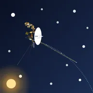
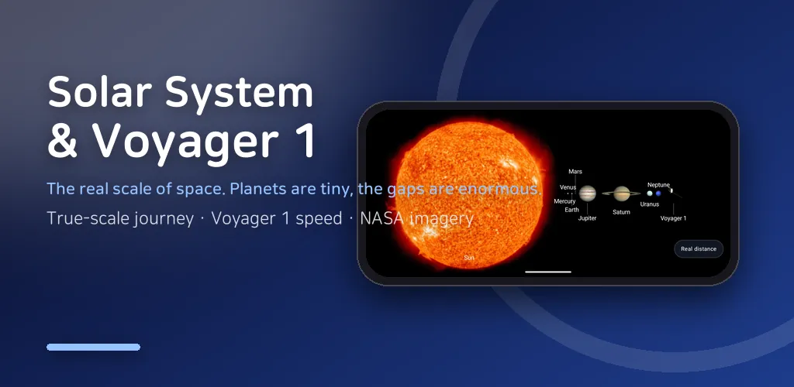
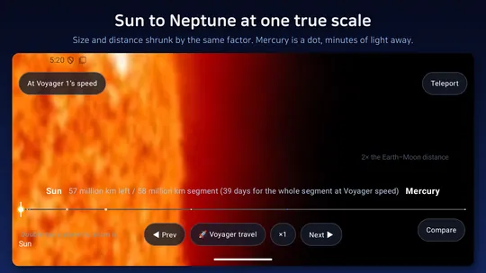
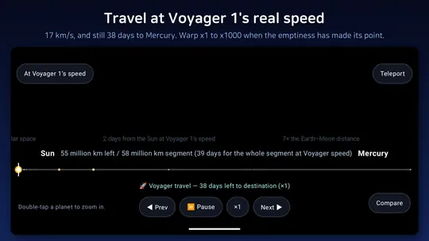
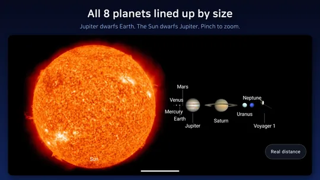
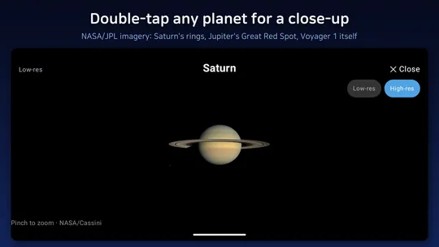
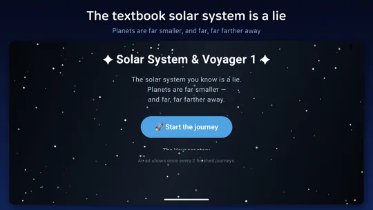

Voyager 1 Space Probe Journey
Travel at Voyager 1 real speed and see how far the probe has actually gone.






About this app
In 1977, humanity launched two probes into space.
One of them, Voyager 1, flew past Jupiter and Saturn, left the solar system in 2012, and entered interstellar space.
Right now it is still flying at 17 km/s — the most distant human-made object ever.
Solar System & Voyager 1 shows that journey with the true size AND the true distance of the solar system, all at one single scale.
Start at the Sun, pass all eight planets, and reach Voyager 1 waiting at the end of the journey. Shrink the size, and the distance shrinks by exactly the same amount — so the vast emptiness between planets is what space actually looks like.
- The story of Voyager 1 (intro)
- 1977 launch, 1979 Jupiter, 1980 Saturn, 1990 "Pale Blue Dot," the Golden Record, 2012 interstellar space.
- Meet Voyager 1's journey in six short chapters first. (Skippable.)
- Real-distance view
- The Sun to Neptune — and Voyager 1 beyond — with size and distance on the very same scale.
- Swipe to travel. Feel the staggering void between planets with your own thumb.
- Human-scale hints like "X light-minutes from the Sun" and "X times the Earth-Moon distance."
- Travel at Voyager's speed
- The top-left HUD shows Voyager 1's real speed (17 km/s, 61,200 km/h).
- Each leg shows how many years and days it would really take Voyager to cross it.
- Compress that vast time with warp (×1 to ×1000). Pause, resume, and instant teleport supported.
- Compare view (size only)
- Set distance aside and line the planets up to compare their sizes.
- See at a glance how giant Jupiter and Saturn are — and how tiny Earth is. Pinch to zoom.
- Close-up view
- Double-tap a planet for a large, real NASA photo. Pinch to zoom in and out.
- Saturn's rings, Earth's blue oceans, Jupiter's Great Red Spot, and Voyager 1's place at the edge.
Sun, Mercury, Venus, Earth, Mars, Jupiter, Saturn, Uranus, Neptune — plus Voyager 1 — using public-domain NASA/JPL imagery.
For anyone curious about the real scale of space, and for parents who want to show kids the universe.
Take a trip to the edge of the solar system with Voyager 1 today.
— Core features work offline (network is used only for high-resolution images).
— Landscape only.
Android · free with ads · Developer: RealTunaLove · Store listing in 17 languages
Background story: why I built it